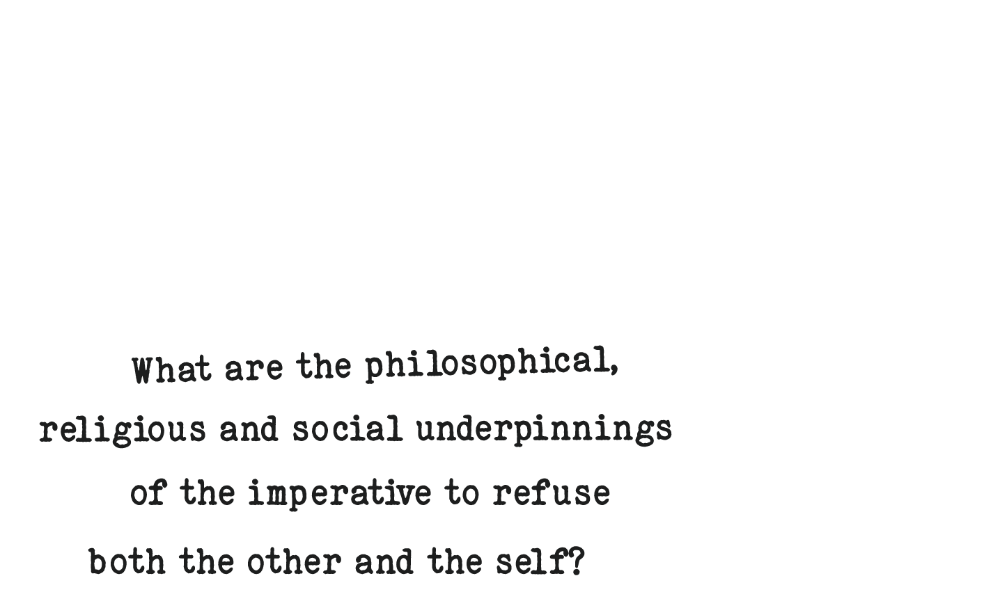
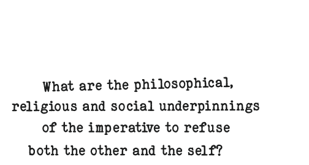
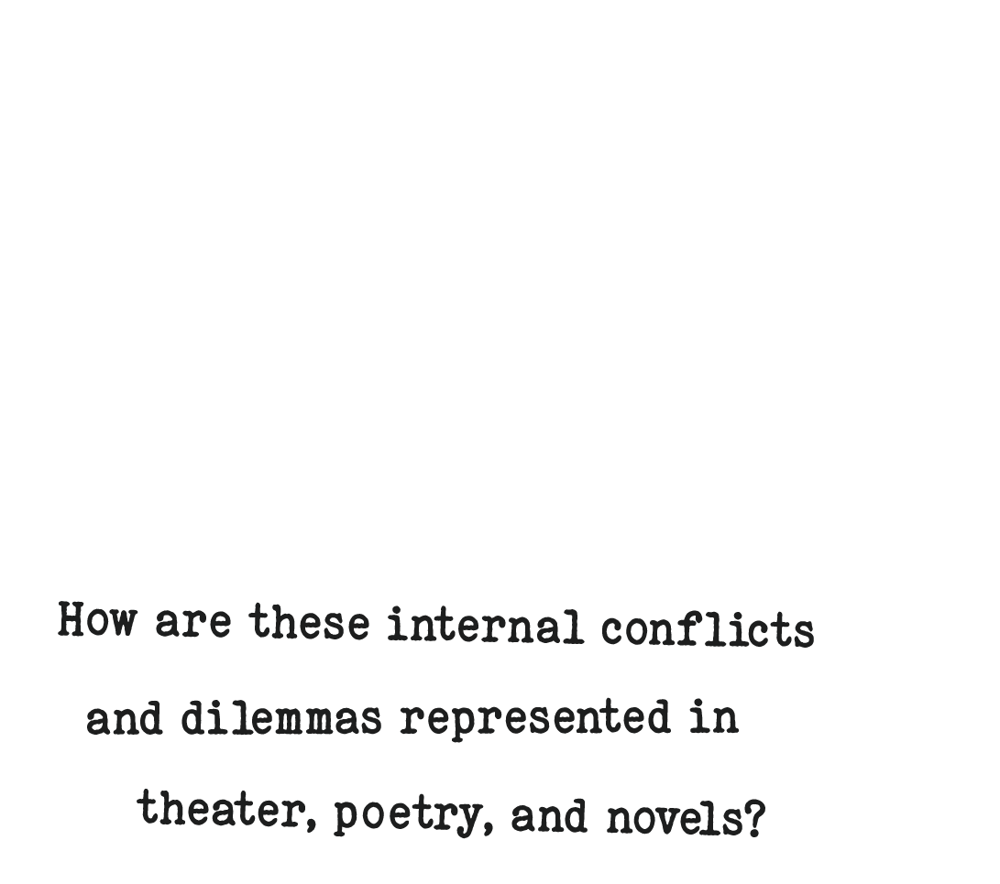
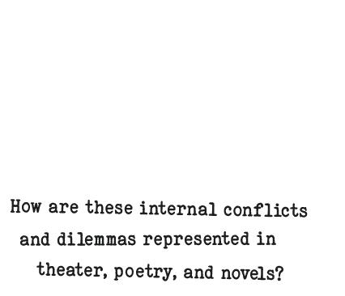
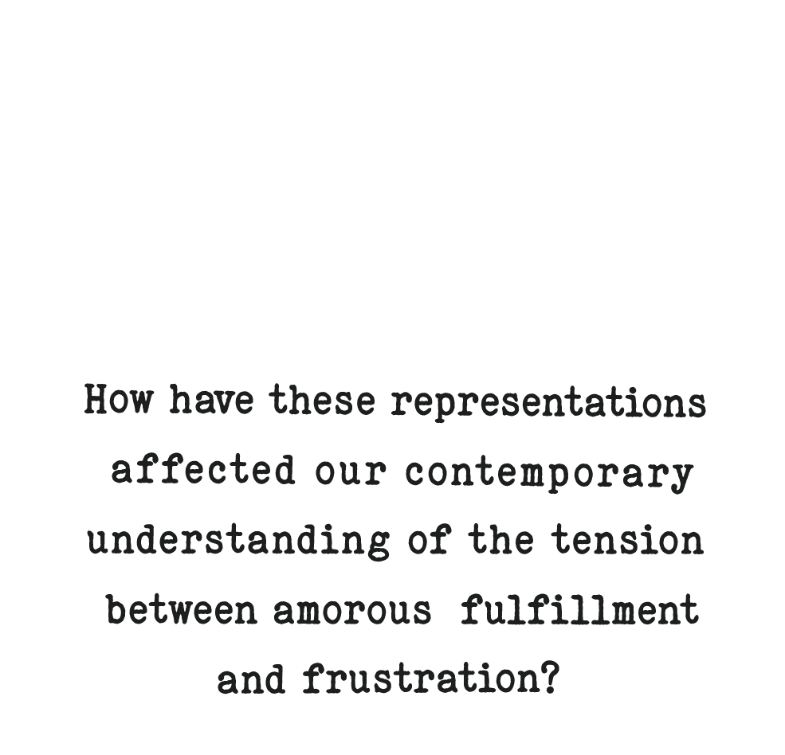
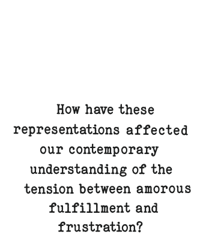
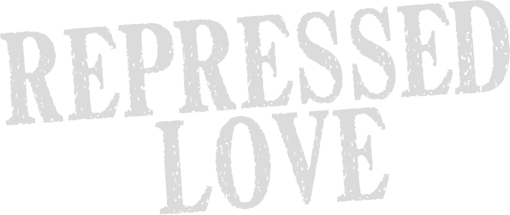
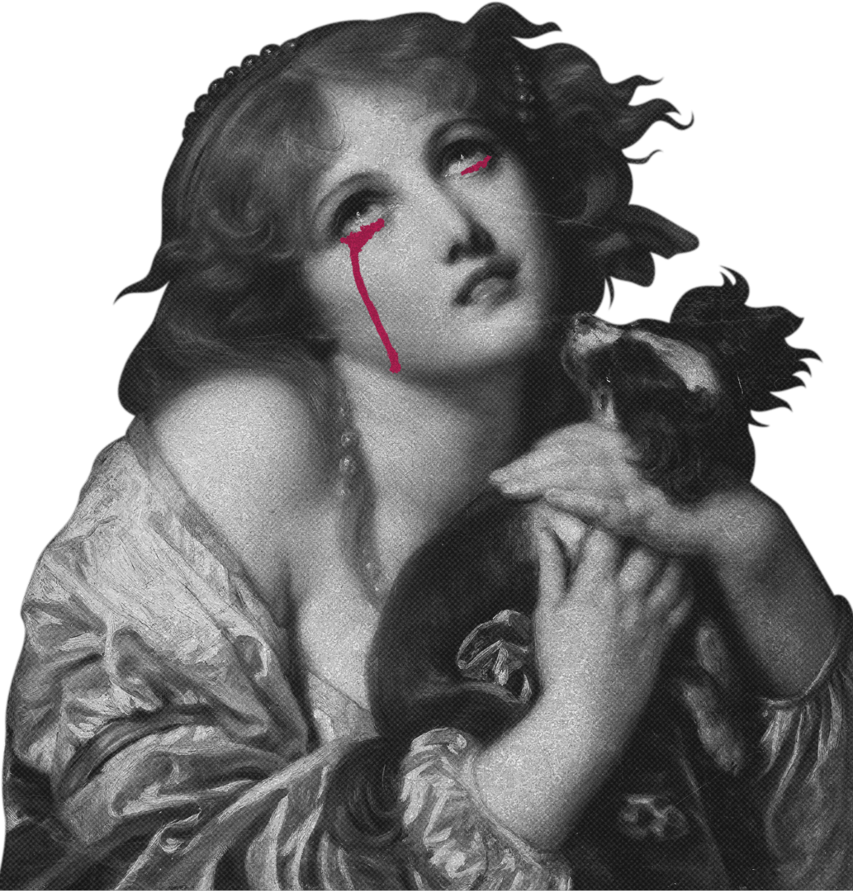
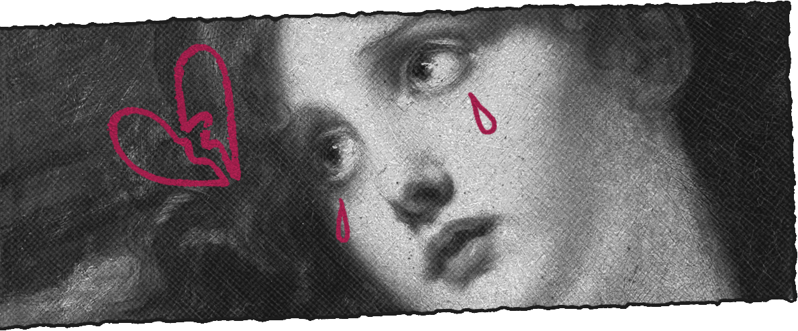

Repressed Love

Course Code:
FRENCH 158 /
FEMGEN 158
Term:
Winter 2027
Monday & Friday
09:30–10:50
Credits:
3-5
French literature is often approached through the perspective of romance, passion, and desire.
This course will examine love in the Ancien regime through its negation.


01 / THE COURSE
The course traces the tradition of erotic self-denial in French literature and thought from the early modern period through the Enlightenment, accompanied with examples in French cinema that reflect the lasting fascination with self-renunciation in modern media and lifestyle.
Readings and discussions are in English.
02 / COURSE PROGRAM
I What is love?
-
Week 1:
Love is BlindLouise Labé, Debate of Love and Folly, sonnets
Jean de La Fontaine, The Loves of Cupid and Psyche -
Week 2:
"A Foolish and Violent Passion"Mme de Lafayette, The Princess of Cleves
II Love and Duty
-
Week 3:
Rival loversPierre Corneille, The Cid
Anthony Mann, El Cid (1961)
Claire Carlin, Women Reading Corneille -
Week 4:
Price of GloryJean Racine, Berenice
Roland Barthes, On Racine
Mitchell Greenberg, Racine: From Ancient Myth to Tragic Modernity -
Week 5:
Sin and GraceBlaise Pascal, Pensées (Thoughts) (excerpts)
Jean Racine, Phaedre
Lucien Goldmann, The Hidden God
III Schools of Virtue
-
Week 6:
The Education of WomenMolière, The School for Wives
Fénelon, Treatise on the Education of Daughters (excerpts) -
Week 7:
The Shah's HaremMontesquieu, Persian Letters
Jean Racine, Bajazet
Edward Said, Orientalism -
Week 8:
Teacher and StudentLetters of Abelard and Heloise
Jean-Jacques Rousseau, Julie or the New Heloise
IV The Pleasures of Denial
-
Week 9:
The Voluntary CelibateGabrielle Suchon, On the Celibate Life Freely Chosen
Mme de Sévigné, Letters -
Week 10:
Meditations on EmptinessRoland Barthes, Empire of Signs
Jean-Pierre Melville, The Samurai (1967)

ENROLL NOW!